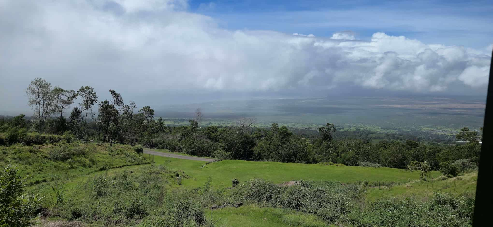

Demetrious Ferris
About Me
Hello there, my name is Demetrious Ferris. I was born and raised in Boynton Beach Florida, and I moved to Hawaii to work with my father when I was 21. I started working on my college education when I was 24.
Maui, Hawaii
Maui is the second-largest island in the Hawaiian Archipelago and is known for its beautiful beaches, tropical climate, and amazing natural scenery. The island is home to the famous Hana Highway, a scenic drive that winds along the coast and offers stunning views of waterfalls, rainforests, and volcanic landscapes.
